AeroTéc — BLUE Turbojet Project
Jan 2026 — Present · LisbonDesign Team Member, Compressor Section
- Aerodynamic design of the centrifugal impeller and diffuser for a small-scale turbojet, within a 15-member team.
- MATLAB thermodynamic and mean-line scripts for 3D blade geometry, flow paths and stage pressure ratio.
- Built the team's parametric CAD pipeline (MATLAB ↔ Siemens NX): a full redesign now takes one click and ~30 s.
- STAR-CCM+ CFD to study separation, tune blade incidence and verify the predicted pressure ratio.